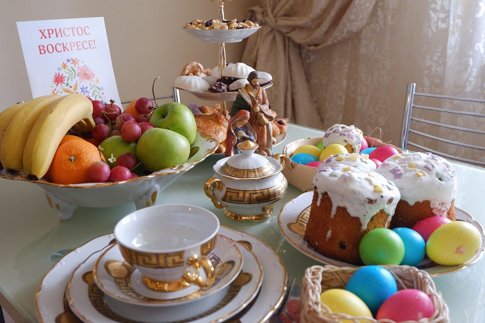
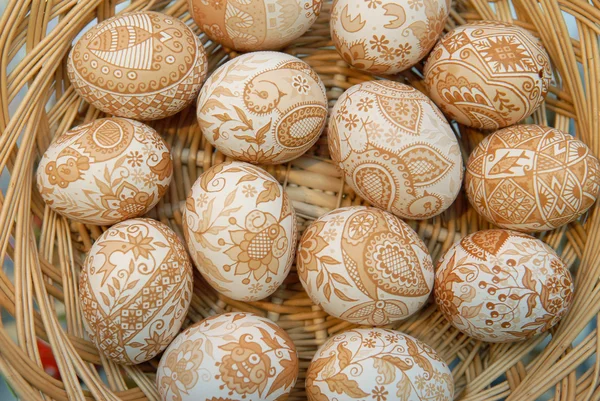
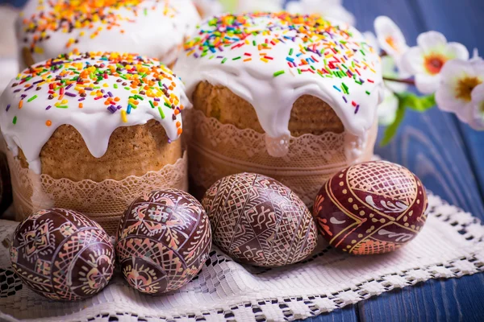

Påske i Ukraina
I Ukraina er påske en av de viktigste kristne høytidene. Det feires til minne om Jesu oppstandelse og markerer seier over døden. Påsken feires etter den julianske kalenderen, så datoen kan variere fra den norske påsken.
Hvordan feires påske i Ukraina?
- 🔹 Faste før påske – Mange holder en 40-dagers faste før påske, uten kjøtt og meieriprodukter.
- 🔹 Påskekurv (Paskekurv) – Folk forbereder en kurv med mat for velsignelse i kirken:
- 🍞 Paska – Søtt påskebrød.
- 🥚 Pysanka/Krasanka – Fargede egg, symboliserer nytt liv.
- 🧀 Ost, pølse, salt og pepperrot – Symboliserer helse og styrke.
- 🔹 Midnattsmesse – Påskeaften går folk til kirken for en nattgudstjeneste. Når de møter hverandre, sier de:
- 🔹 Påskefrokost – Søndag morgen samles familien for å spise de velsignede matvarene.
- 🔹 Tradisjoner og leker
- 🥚 Egg-rulling – En lek der man ruller egg for å slå motstanderens egg.
- 💦 Vannspruting på mandag – Unge menn spruter vann på jentene for helse og lykke.
"Kristus er oppstanden!" – "Han er sannelig oppstanden!"
Påsken i Ukraina er en tid for feiring, samvær og gamle tradisjoner. 🌿✨